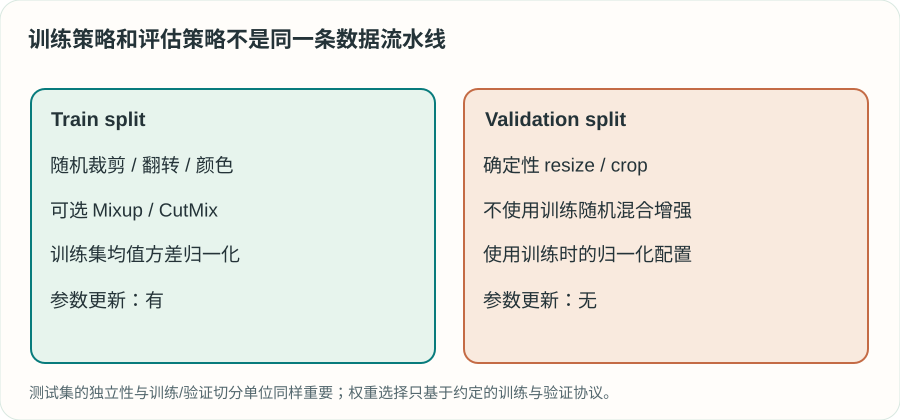
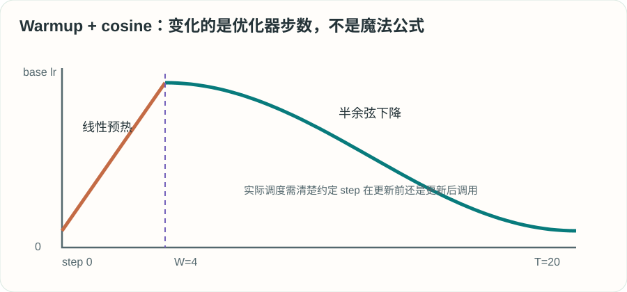
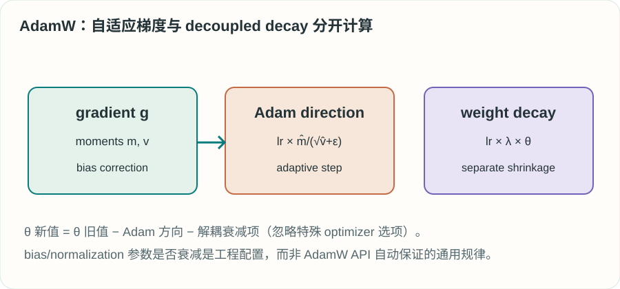

CHAPTER 13 · REPRODUCIBLE TRAINING
训练策略：把每次优化变成可复查的实验
架构只是函数形式。学习率、优化器、样本混合、精度模式与状态恢复共同决定训练过程是否可信。
“训练配方”是一组互相耦合的决策
相同模型结构在不同数据划分、随机增强、学习率、weight decay、优化器、batch size、精度模式和总更新次数下可能产生不同结论。不能从一次训练的损失下降就断言某个网络结构更好；比较架构时，应先固定或完整记录训练协议。
建议为一个可复现 run 保存：Git commit、依赖与设备、数据清单及划分、完整 config、random seed、优化器 state、scheduler state、checkpoint、验证代码与输出。若来自预训练权重，还要保存权重来源及对应 transforms。

学习率预热与余弦衰减到底在控制什么？
学习率是参数更新方向上的缩放因子。初期较大步长可能造成不稳定，预热阶段让学习率逐步增至预设最大值；之后半余弦缓慢降低，末端接近指定最小值。核心变量应以优化器更新次数为单位；梯度累积后，microbatch 数量和 optimizer step 数量不相同。

只适用于 W≤t≤T 的衰减段，且假定 eta_min=0；预热段需独立定义。
梯度裁剪、优化器预热以及 BN/LN 的状态都可能影响训练稳定性，不能把某个学习率当成适用于所有模型的神奇常数。
import math
def lr_factor(step, warmup=4, total=20):
assert 0 < warmup < total and 0 <= step <= total
if step < warmup:
return step / warmup
progress = (step - warmup) / (total - warmup)
return 0.5 * (1 + math.cos(math.pi * progress))
values = [lr_factor(t) for t in range(21)]
assert values[0] == 0 and values[4] == 1
assert abs(values[-1]) < 1e-12
assert all(0 <= v <= 1 for v in values)
print("factors at 0,4,12,20:", [round(values[i],3) for i in (0,4,12,20)])SGD、Adam 与 AdamW 的核心区别
SGD 以梯度或其动量估计作为参数方向；Adam 结合梯度一阶与二阶矩估计。AdamW 明确将权重衰减从自适应梯度更新项中解耦，因此不等价于把 λθ 加入梯度后喂给普通 Adam。AdamW 对参数数值进行衰减的行为在 gradient=0 的例子里也能观察到。

简化 AdamW 更新（不包含 maximize/amsgrad 等可选变体），θ 为参数、m/v 为矩估计、λ 为权重衰减系数。
import torch
from torch import nn
p = nn.Parameter(torch.tensor([1.0]))
optimizer = torch.optim.AdamW([p], lr=0.1, weight_decay=0.1)
p.grad = torch.zeros_like(p) # 零梯度，但仍存在参数 grad
optimizer.step()
assert torch.allclose(p.detach(), torch.tensor([0.99]), atol=1e-6)
print("weight after decoupled decay:", p.item())不是每个参数都必须衰减：bias 与 normalization scale 可能被显式设置为 no-decay 组，这取决于实验配方。要把这些参数分组写进公开 config，而不是笼统声称 AdamW 会自动处理。
初始化、归一化和正则化分别影响什么？
ReLU 网络经常用针对扇入（fan-in）的 Kaiming/He 初始化，以控制初始化时信号方差；GELU 或其它激活不应不经验证便套用相同推导。BatchNorm 在训练时依赖 mini-batch 统计并维护运行均值方差，LayerNorm 则在单个样本的指定特征轴计算统计量；不能在 NCHW 张量最后维直接使用 LayerNorm(C) 却认为它归一化通道。
Dropout、随机深度、Mixup 和 CutMix 都是正则化或增强的候选方法，作用对象分别是激活、残差路径或输入样本与标签。Mixup 若将两张图线性混合，标签通常也要做相同系数的 soft target 混合；这会改变损失输入的标签类型与解释。CutMix 的标签系数还应跟实际裁剪面积有关，而不是始终用采样系数。
混合精度、梯度累积与训练稳定性
混合精度可以降低部分运算或激活存储成本，但数值范围限制会导致下溢/溢出。PyTorch 的 autocast 由算子决定合适精度；使用 float16 训练时通常需要 GradScaler，在 backward 前 scale loss、step 前 unscale 与按需裁剪；bfloat16 的数值指数范围不同，不一定需要相同的 loss scaling。
梯度累积时，应明确 loss reduction 与有效 batch：若每个微批量等大小，梯度累积 A 次时常将均值 loss 除以 A；如果不等大小，需要按样本量而非简单按 A 处理。EMA（参数移动平均）可改善某些任务下的评估表现，但不是自动保证提升，也会增加额外状态与实现复杂度。
对模型评估，记录 AMP 模式、数据格式、cuDNN 设置、训练设备与 kernel 版本尤为重要，微小精度差距可能不及随机种子或数据管道差异。
一份真正可比较的实验日志应该包含什么？
| 类别 | 必须可核查的信息 |
|---|---|
| 样本 | 来源、训练/验证/测试划分、是否按主体或场景去重 |
| 目标 | 任务标签、损失定义、soft target 与 mask 规则 |
| 优化 | optimizer、lr schedule 单位、warmup、weight decay groups、gradient clipping |
| 训练 | epochs 和 steps、真实 batch、累积次数、随机增强、精度模式、种子 |
| 评估 | 单裁剪或多裁剪、模型集成、硬件、延迟测量方法与置信区间 |
检查理解：同一篇论文中的两种模型只换架构，就足以做公平对比吗？
不一定。数据、预训练、训练时长、算力、增强与评估口径若不同，无法直接把结果差异归因于架构本身。
官方文档与原始论文
数值示例只验证明确的优化器行为；不存在对特定数据集的准确率提升保证。